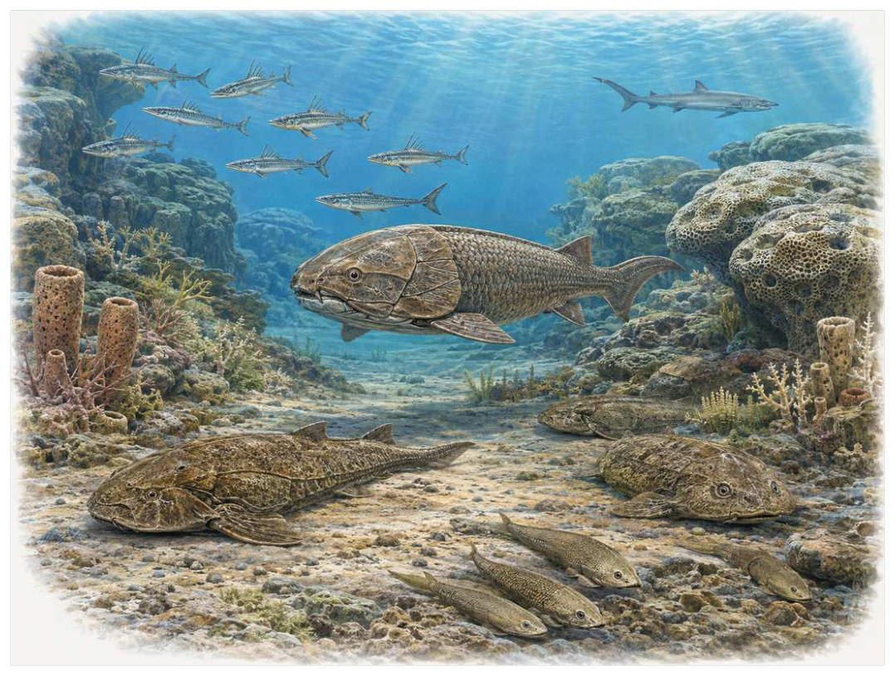

第07篇 · 泥盆纪：鱼类时代与四足动物起源 · 第 19 章
泥盆纪鱼类世界：颌改变了什么
本篇主题:泥盆纪：鱼类时代与四足动物起源
颌、鳍、森林和浅水环境共同推动脊椎动物的新实验。

本章科学复原配图 （用于呈现结构与生态关系, 不替代化石照片、测量数据与系统发育证据。）
把时间拨到约4.19亿至3.59亿年前。这一章不只列出当时的生物，而要追问环境、能量和生态关系怎样共同塑造身体。泥盆纪被称为鱼类时代，不是因为此前没有鱼，而是有颌脊椎动物在身体尺寸、口部结构和栖息环境上迅速分化。盾皮鱼、棘鱼、早期鲨类、辐鳍鱼和肉鳍鱼共同存在。颌让摄食更可控，成对鳍提高转向和稳定，牙齿与骨板则把不同食物转化为生态机会。
进入这个时代
若真正置身其中，首先感受到的是介质本身：水是否含氧、地面是否稳定、空气是否干燥、植被是否遮挡视线。身体结构只有放在这些条件中才有意义。珊瑚礁和浅海之间，大型装甲鱼占据捕食和压碎生态位，小型棘鱼追逐浮游或底栖食物，早期鲨类用更轻的软骨骨架游动。河流与湖泊中，肉鳍鱼和辐鳍鱼探索低氧、植被复杂的水域。
在“泥盆纪鱼类世界：颌改变了什么”所覆盖的时间里，不能把地理与气候当作固定背景。海陆位置、海平面、河流或植被结构会改变资源可达性，同一性状在不同地区可能得到完全相反的选择结果。
以泥盆纪鱼类世界：颌改变了什么为例，演化的单位是种群而不是单个英雄。个体结构影响生存，但地理分布、繁殖速度、幼体死亡率和种群规模决定变异能否保留下来。化石中最醒目的成年骨架，未必是决定支系命运的阶段。 在本章中，这一约束具体落在“颌扩大可处理食物大小和硬度范围”这条关系上。
再从约4.19亿至3.59亿年前的时间尺度看，生态位不是预先摆好的空格，而是生物与环境共同形成的关系。掘穴者改变沉积物，森林固定河岸，礁体构建者制造硬底，巨型植食者改变火与养分。生物占据生态位的同时也在制造新的生态位。它与“活动颌”共同决定了后续变化可以沿哪些路径发生。
生态系统如何运转
本章的一条关键关系是“颌扩大可处理食物大小和硬度范围”。它首先改变资源在个体之间的分配：能更早发现、处理或占据资源的种群获得收益，而另一方会承受新的选择压力。
围绕“颌扩大可处理食物大小和硬度范围”，这种关系没有永恒赢家。收益随密度和环境改变：防御越常见，攻击专门化的价值越高；资源越稀少，维持昂贵结构的代价越大。化石记录中的扩张与衰退，常是这种动态平衡被外部事件打破的结果。 对泥盆纪鱼类世界：颌改变了什么而言，这一后果还会与“成对鳍提高姿态控制并允许更精细追逐”相互放大或抵消。
“成对鳍提高姿态控制并允许更精细追逐”体现了生态系统的反馈性。一方结构或行为稍有改变，另一方的防御、逃避、繁殖和空间选择就会重新排列，长期累积后才形成宏观演化差异。
围绕“成对鳍提高姿态控制并允许更精细追逐”，它的长期后果通常通过幼体和繁殖体现。成年个体即使能抵抗一次危机，只要巢址、配子、幼体食物或成长季节被破坏，种群仍会在数代内下降。 对泥盆纪鱼类世界：颌改变了什么而言，这一后果还会与“不同骨骼材料在防护、重量和生长之间权衡”相互放大或抵消。
在约4.19亿至3.59亿年前，“不同骨骼材料在防护、重量和生长之间权衡”把环境条件转化为生物之间的差异。相同气候并不会平均影响所有支系，因为它们利用的食物、水层、底质和繁殖地点并不相同。
围绕“不同骨骼材料在防护、重量和生长之间权衡”，还要考虑空间异质性。一项在浅海、河谷或林冠有效的策略，移到深水、干旱内陆或开阔地便可能失去优势。因此同一支系常出现区域性扩张，而不是全球同步取代。 对泥盆纪鱼类世界：颌改变了什么而言，这一后果还会与“颌扩大可处理食物大小和硬度范围”相互放大或抵消。
关键演化创新
在“泥盆纪鱼类世界：颌改变了什么”中，围绕“活动颌”，“活动颌”是本章的重要演化创新。创新并不等于某一代突然长出完整器官，它通常由旧结构的尺寸、连接、材料和表达时序逐步变化，并在每个中间阶段承担可用功能。 它首先需要在约4.19亿至3.59亿年前的生态条件下产生可测量收益。
就“活动颌”而言，研究者通过近缘支系比较、发育同源、关节活动、微观组织和出现顺序重建这条路径。真正有价值的过渡化石不是“半成品”，而是证明中间组合可以独立生活。 本章把它与“成对胸鳍与腹鳍”并列，是为了显示复杂性状往往依赖多部分协同。
在“泥盆纪鱼类世界：颌改变了什么”中，围绕“成对胸鳍与腹鳍”，这一结构的历史应按性状拆开。支撑、感觉、供能和控制往往不是同时成熟，化石会显示镶嵌状态：某一部分已接近后来的形态，其他部分仍保留祖征。 它首先需要在约4.19亿至3.59亿年前的生态条件下产生可测量收益。
就“成对胸鳍与腹鳍”而言，它的成功具有条件性。环境稳定时，专门化可提高效率；危机到来时，同一专门化可能限制食物和栖息地选择。演化创新因此既能开启辐射，也能制造新的脆弱性。 本章把它与“牙齿和颌骨模块化”并列，是为了显示复杂性状往往依赖多部分协同。
在“泥盆纪鱼类世界：颌改变了什么”中，围绕“牙齿和颌骨模块化”，“牙齿和颌骨模块化”是本章的重要演化创新。创新并不等于某一代突然长出完整器官，它通常由旧结构的尺寸、连接、材料和表达时序逐步变化，并在每个中间阶段承担可用功能。 它首先需要在约4.19亿至3.59亿年前的生态条件下产生可测量收益。
就“牙齿和颌骨模块化”而言，这一变化还可能在多个支系中独立发生。若功能相似而解剖来源不同，就是趋同；若结构来自共同祖先但功能改变，则属于同源结构的分化。二者不能仅靠外观判断。 本章把它与“活动颌”并列，是为了显示复杂性状往往依赖多部分协同。
生命群像：把物种放回生态网络
胸脊鲨（Cladoselache）
从外形看，胸脊鲨（Cladoselache）最容易被记住的是流线身体、分叉尾和保存胃内容物展示早期鲨类生态。它生活在晚泥盆世，大小约约1至2米，承担快速游泳的海洋捕食者这一生态功能。把年代、体型和功能放在一起，才能避免把奇特形态当成无意义装饰。
对胸脊鲨而言，从种群角度看，偶发捕猎和个体伤病远不如长期繁殖率重要。广泛分布的普通个体比一具异常巨大的标本更能代表支系，然而普通个体往往较少进入公众叙事。研究者必须防止把化石收藏偏好误当成古代丰度。 这使“流线身体、分叉尾和保存胃内容物展示早期鲨类生态”不能脱离其快速游泳的海洋捕食者角色来理解。
支持该解释的材料包括其鳍和生殖结构较原始，不是现代鲨鱼的直接缩小版。若不同证据出现冲突，应优先报告范围而不是强行给出单值。例如体长会随参照类群变化，运动能力会随软组织假设变化，系统位置也会随新增性状重新计算。
由胸脊鲨这个案例看，它也展示专门化的双面性：结构在稳定环境中提高效率，却可能在气候、食物或竞争格局突变时限制转向。灭绝不是对设计的道德评分，而是性状、地理范围和偶然事件相遇后的历史结果。 它在晚泥盆世留下的记录，因此同时是第19章所讨论的形态史和生态史的一部分。
棘鱼（Acanthodes）
棘鱼（Acanthodes）是泥盆纪至二叠纪的一名真实生态成员，而不是通往后代的抽象过渡。它约有约几十厘米，以小型游泳摄食者的方式获取资源；多枚鳍棘和轻巧身体代表已灭绝棘鱼类反映了其祖先历史与局部选择压力共同留下的结果。
对棘鱼而言，把它放回群落后，结构的意义更清楚。食物并不会平均分布，水深、植被高度、底质和季节把资源切成小块；它的身体让其中一部分资源可被利用，也使它与近缘种错开生态位。种群命运还取决于幼体能否成长、繁殖地点是否稳定以及灾害后是否仍有避难所。 这使“多枚鳍棘和轻巧身体代表已灭绝棘鱼类”不能脱离其小型游泳摄食者角色来理解。
我们之所以能够作出上述判断，主要因为系统位置在软骨鱼与硬骨鱼干群之间多次调整。单一结构通常有多种功能解释，所以还要查看磨损、病理、肌肉附着、沉积环境和近缘比较。计算模型能排除不可能姿势，却不能自动恢复没有保存的软组织。
由棘鱼这个案例看，面对仍有争议的细节，负责任的复原不是停止讲述，而是标注证据等级。形态、年代和亲缘可较确定，具体姿势、叫声、求偶和群猎则按材料降级；新标本会在这些边界内继续改写认识。 它在泥盆纪至二叠纪留下的记录，因此同时是第19章所讨论的形态史和生态史的一部分。
沟鳞鱼（Bothriolepis）
若把镜头从时代拉近到个体，沟鳞鱼（Bothriolepis）会首先进入视野。它生活于晚泥盆世，体型约多为几十厘米。作为底栖装甲鱼，可能吸食或摄食底质，它依靠胸部装甲和关节化胸鳍遍布多大陆淡水与河口沉积与环境和其他生物发生关系。
对沟鳞鱼而言，同域物种的存在迫使它分割时间与空间。相似牙齿不一定吃完全相同的食物，相似四肢也可能适应不同底质；微磨损、同位素和伴生群落常能揭示这种细分。环境改变时，原本减少竞争的专门化又可能成为迁移和改食的障碍。 这使“胸部装甲和关节化胸鳍遍布多大陆淡水与河口沉积”不能脱离其底栖装甲鱼，可能吸食或摄食底质角色来理解。
其复原依赖过去常描绘为迟缓底栖者，实际运动和食性可能更灵活。年代和保存形态通常属于较强证据，体重、速度、颜色和社会行为则需要额外假设。书中把这些层次拆开，是为了让读者知道哪些可视为事实，哪些仍应等待更多材料。
由沟鳞鱼这个案例看，它不是祖先链条上必须跨过的一格。演化树中同时存在许多近缘支系，只有少数留下后代；旁支化石同样关键，因为它们显示某组性状出现的顺序和可行范围。 它在晚泥盆世留下的记录，因此同时是第19章所讨论的形态史和生态史的一部分。
攀鲈式肺鱼早期类群（Dipterus）
攀鲈式肺鱼早期类群（Dipterus）存在于中晚泥盆世。现有材料显示其大小约约几十厘米，生态位置接近浅水底栖、用齿板压碎食物。肺和鳃结合适合氧波动水体让它成为理解本章主题的合适案例，但不意味着同一类群所有成员都采用相同策略。
对攀鲈式肺鱼早期类群而言，它的成功不需要在所有性能上压倒其他物种，只需在特定资源和风险组合中留下更多后代。速度、咬合、装甲、感官与繁殖之间存在预算，某项性能极端化往往意味着另一项被牺牲。所谓“霸主”只是复杂权衡后的区域性结果。 这使“肺和鳃结合适合氧波动水体”不能脱离其浅水底栖、用齿板压碎食物角色来理解。
科学家并未直接看见它生活，依据是不同肺鱼是否会旱眠不可由类群名称一概推断。现代类比可以帮助提出可检验模型，却不能取代化石；越具体的短时行为，越需要痕迹、内容物或重复病理等直接线索。
由攀鲈式肺鱼早期类群这个案例看，这个案例还提醒我们，亲缘和生态角色是两件事。近亲可以因资源分化而外形迥异，远亲也能因相似压力而趋同。把它放在演化树和食物网两个坐标中，才不会误写成线性进步。 它在中晚泥盆世留下的记录，因此同时是第19章所讨论的形态史和生态史的一部分。
鳞齿鱼（Cheirolepis）
在中泥盆世，鳞齿鱼（Cheirolepis）以约约20至50厘米的身体参与食物网。它不是孤立的“明星生物”，而是主动游泳的小型捕食者；早期辐鳍鱼显示薄鳍条和轻巧鳞片路线决定它能利用哪些资源，也决定必须承担哪些成本。
对鳞齿鱼而言，从种群角度看，偶发捕猎和个体伤病远不如长期繁殖率重要。广泛分布的普通个体比一具异常巨大的标本更能代表支系，然而普通个体往往较少进入公众叙事。研究者必须防止把化石收藏偏好误当成古代丰度。 这使“早期辐鳍鱼显示薄鳍条和轻巧鳞片路线”不能脱离其主动游泳的小型捕食者角色来理解。
证据核心是完整标本有限，具体游泳性能由形态比较推断。化石记录更擅长回答“结构是什么”，较难回答“每天怎样行动”。足迹、胃内容物、咬痕或胚胎若存在，会显著缩小推测范围；若只有零散骨骼，行为叙述就必须更克制。
由鳞齿鱼这个案例看，它所代表的身体方案后来可能消失，也可能被远亲以不同材料重新发明。生命史因此既有可重复的功能解，也有不可复制的谱系路径。两者结合，才解释现代生物为何既熟悉又偶然。 它在中泥盆世留下的记录，因此同时是第19章所讨论的形态史和生态史的一部分。
因果链：环境、生态与性状
如果把泥盆纪鱼类世界：颌改变了什么当作一次自然实验，可以追问：假如“颌扩大可处理食物大小和硬度范围”较弱，“成对胸鳍与腹鳍”是否仍会带来同样收益；假如“成对鳍提高姿态控制并允许更精细追逐”更强，胸脊鲨的流线身体、分叉尾和保存胃内容物展示早期鲨类生态是否反而成为负担。反事实无法直接验证，却能帮助研究者识别模型隐含的因果假设。随后再用颌弓关节和肌肉附着点揭示咬合和牙齿微磨损和胃内容物约束食性寻找可区分的预测：不同机制应在体型分布、损伤类型、沉积环境或出现顺序上留下不同痕迹。科学解释不是为现有图景编一个顺耳故事，而是让相互竞争的解释接受同一批材料检验。
“颌扩大可处理食物大小和硬度范围”与“不同骨骼材料在防护、重量和生长之间权衡”之间常存在反馈。一个支系改变沉积、植被或猎物数量后，环境会对其自身和其他支系产生新的选择压力；短期收益可能导致长期资源下降，局部工程行为也可能创造此前不存在的栖息地。胸脊鲨作为快速游泳的海洋捕食者，沟鳞鱼作为底栖装甲鱼，可能吸食或摄食底质，即使从不直接相遇，也可能经由这种环境改造联系起来。生态系统因此不是静态背景上的竞赛场，而是参与者不断修改规则的动态结构；这正是解释泥盆纪鱼类世界：颌改变了什么为何会留下长期后果的关键。
亲缘关系为功能解释设定边界。“牙齿和颌骨模块化”若在近缘支系中以不同程度出现，最简解释通常是祖先已具备部分结构，后代分别强化或丢失；若远亲在相似生态位中出现相近功能，则需要检查内部解剖是否来自不同材料。胸脊鲨与沟鳞鱼可用于演示这一区分：外形近似不自动证明近缘，外形差异也不否定深层同源。把系统发育树、年代和生态证据叠在一起，才能判断泥盆纪鱼类世界：颌改变了什么中的相似究竟来自共同继承、趋同还是保留的原始特征。
从资源入口看，“颌扩大可处理食物大小和硬度范围”决定能量首先由谁获得，而“成对鳍提高姿态控制并允许更精细追逐”决定能量随后怎样在群落中转移。只有当个体能够借助“活动颌”把资源转化为生长或后代时，形态优势才会成为种群优势。胸脊鲨与棘鱼分别展示了这条链上的不同位置：前者的流线身体、分叉尾和保存胃内容物展示早期鲨类生态使其偏向快速游泳的海洋捕食者，后者的多枚鳍棘和轻巧身体代表已灭绝棘鱼类则服务于小型游泳摄食者。这并不意味着二者必然直接竞争；更常见的情况是，它们通过共享资源、改变栖息地或影响共同捕食者而间接连接。把这种间接作用纳入，才看得见泥盆纪鱼类世界：颌改变了什么不是物种名单，而是一张持续重新分配能量的网络。
“不同骨骼材料在防护、重量和生长之间权衡”说明环境不是在所有个体身上平均施力。若一个种群分布广、世代较短或能使用多种资源，它可能把一次局部危机吸收到地理和生活史差异之中；若另一个种群依赖狭窄水深、单一植物或特定繁殖场，平时高效的专门化就可能在变化中放大风险。棘鱼和沟鳞鱼的差异可以用来提出这种比较，但不能仅凭外形宣布谁更适应。真正需要的是地层连续性、地区分布、年龄结构和伴生群落共同告诉我们，哪些性状在泥盆纪鱼类世界：颌改变了什么的具体条件下转化成了更稳定的繁殖。
时代横截面：个体、种群与证据
把胸脊鲨与棘鱼并排观察，可以看到同一时代并不存在唯一正确的身体方案。胸脊鲨以流线身体、分叉尾和保存胃内容物展示早期鲨类生态参与快速游泳的海洋捕食者，棘鱼则依靠多枚鳍棘和轻巧身体代表已灭绝棘鱼类承担小型游泳摄食者；两者可能在食物尺寸、活动空间或时间上错开，从而降低直接竞争。若环境改变使这些维度重新重叠，原先共存的支系才可能发生更强替代。比较的目的不是判断谁更先进，而是识别每套结构在哪些条件下有效、在哪些条件下暴露成本。
尺度转换是泥盆纪鱼类世界：颌改变了什么最容易被忽略的问题。胸脊鲨的一次摄食、一次移动或一次繁殖属于分钟到季节尺度；种群扩张需要数百至数万年；“活动颌”在演化树上的固定则可能跨越更久。短期观察能够说明结构怎样工作，却不能单独解释支系为何在约4.19亿至3.59亿年前扩张。反之，宏观多样性曲线能显示替换，却不能指出每次选择发生在什么身体和生活阶段。把尺度接起来，因果链才完整。
从失败的替代解释出发，能够看见研究如何推进。若把胸脊鲨简单解释为快速游泳的海洋捕食者，就应检查其流线身体、分叉尾和保存胃内容物展示早期鲨类生态是否真的适合该功能；若另一种功能同样可行，再看磨损、同位素、沉积环境或共存生物能否区分。棘鱼与沟鳞鱼提供了比较基线，帮助判断某一结构是普遍祖征、特殊适应还是成长阶段差异。结论不是从外观直觉跳出，而是在一系列被排除的可能性之后留下。
本章还可以作为灭绝选择性的预演。若危机首先削弱“颌扩大可处理食物大小和硬度范围”，依赖该环节的胸脊鲨可能比外形更脆弱但食物广泛的棘鱼更早衰退；若危机破坏的是繁殖场或幼体环境，成年体型和武器几乎不能提供保护。分布范围、成熟速度、休眠能力与食谱因此要和流线身体、分叉尾和保存胃内容物展示早期鲨类生态、多枚鳍棘和轻巧身体代表已灭绝棘鱼类等显眼结构一起评估。危机筛选的是整套生活史，而不是单项竞技能力。
从保存角度看，胸脊鲨和棘鱼也可能被化石记录不公平地对待。胸脊鲨的流线身体、分叉尾和保存胃内容物展示早期鲨类生态若包含坚硬、容易辨认的部分，就更可能被采集和命名；棘鱼若身体柔软、个体小或生活在侵蚀环境，真实丰度可能被严重低估。颌弓关节和肌肉附着点揭示咬合能补充一部分信息，牙齿微磨损和胃内容物约束食性又提供另一尺度的限制。只有先问“什么容易被保存”，再问“什么当时常见”，才不会把博物馆展柜的比例误当成古生态比例。
科学家为什么这样判断
证据条目“颌弓关节和肌肉附着点揭示咬合”的作用，是把肉眼可见的化石转化为可检验结论。研究者先确认样品的层位和成岩历史，再测量结构、比较近缘种并建立替代模型；若解释只在一套参数下成立，就不能写成唯一事实。
使用“牙齿微磨损和胃内容物约束食性”时必须处理保存偏差。坚硬组织、低氧埋藏和火山灰覆盖更容易留下记录，岩层出露与采集历史又决定样本数量。统计分析通常要校正这些不均匀性，避免把采样强度当作真实多样性。
围绕“鳍骨与身体轮廓用于流体力学模型”，高可信结论通常来自独立方法一致。例如形态暗示某种食性时，微磨损、同位素或胃内容物若给出相同方向，解释便更稳固；若结果冲突，就应保留生态弹性或地区差异。
在“泥盆纪鱼类世界：颌改变了什么”这一问题上，把上述方法合在一起，研究者才能从残缺材料走向受约束的复原。任何一条证据都可能受到成岩、污染、样本量或现代类比的限制；结论越具体，越需要多条独立证据指向同一方向，并与约4.19亿至3.59亿年前的地层背景相容。
过去的图景与今天的证据
‘颌由一根鳃弓直接变成’是过度简化。发育证据支持前部咽弓参与，但早期颌、鳃和口腔边界的演化涉及多组织重排，化石不断改变同源关系解释。
围绕“泥盆纪鱼类世界：颌改变了什么”，这里的争论并非一方相信科学、另一方拒绝科学，而是不同材料对模型的约束力度不同。旧结论可能建立在少量标本或错误现代类比上，新技术增加性状后会改变最合理解释。修正是研究正常运行的结果。
对约4.19亿至3.59亿年前的材料而言，旧复原并不总是彻底错误。它可能正确抓住亲缘或基本功能，却在姿势、比例和生态上被新标本修订。比较“过去认为”和“现在更支持”，能看见证据如何逐层替换想象。
跨尺度观察
能量账本：任何大型身体、快速运动或高代谢都必须由初级生产支撑。食物从生产者进入消费者时会损失大量能量，因此顶级捕食者种群必然远少于猎物。环境变化若先削弱生产端，高营养级通常最早出现繁殖失败；这比单次搏斗更能决定支系命运。在“泥盆纪鱼类世界：颌改变了什么”中，这一尺度具体连接了“颌扩大可处理食物大小和硬度范围”与“活动颌”，因而不能只从单个成年标本判断。
偶然与必然：流体力学、材料强度和能量转换使某些功能解反复出现，显示演化有可预测部分；但由哪一支系先获得变异、谁恰好位于避难地，又带有不可复制的历史偶然。现代世界是二者叠加的结果。 在“泥盆纪鱼类世界：颌改变了什么”中，这一尺度具体连接了“成对鳍提高姿态控制并允许更精细追逐”与“成对胸鳍与腹鳍”，因而不能只从单个成年标本判断。
证据等级：地层年代和硬组织形态通常最强，食性若有多种独立线索可达主流解释，颜色、群居、求偶和叫声则常停留在合理推测。把等级写清并不会破坏画面，反而让读者知道想象可以走到哪里。 在“泥盆纪鱼类世界：颌改变了什么”中，这一尺度具体连接了“不同骨骼材料在防护、重量和生长之间权衡”与“牙齿和颌骨模块化”，因而不能只从单个成年标本判断。
通向下一个时代
从本章走向下一阶段时，需要保留的不是一串物种名，而是一个因果链：环境改变可用能量与栖息地，生态关系筛选性状，性状又反过来改造环境。盾皮鱼把装甲颌推向极端，其中邓氏鱼最著名，也最容易被夸大。下一章专门拆解它真实的体型、咬合和生态位。
本章精选来源
- [R37] Clack, J. A. Gaining Ground: The Origin and Evolution of Tetrapods, 2nd ed. Indiana University Press, 2012.
- [R38] Daeschler, E. B., Shubin, N. H. & Jenkins, F. A. A Devonian tetrapod-like fish and the evolution of the tetrapod body plan. Nature 440, 757-763 (2006).
- [R39] Shubin, N. H., Daeschler, E. B. & Jenkins, F. A. The pectoral fin of Tiktaalik roseae and the origin of the tetrapod limb. Nature 440, 764-771 (2006).
- [R40] Niedzźwiedzki, G. et al. Tetrapod trackways from the early Middle Devonian period of Poland. Nature 463, 43-48 (2010).
- [R41] Boisvert, C. A., Mark-Kurik, E. & Ahlberg, P. E. The pectoral fin of Panderichthys and the origin of digits. Nature 456, 636-638 (2008).